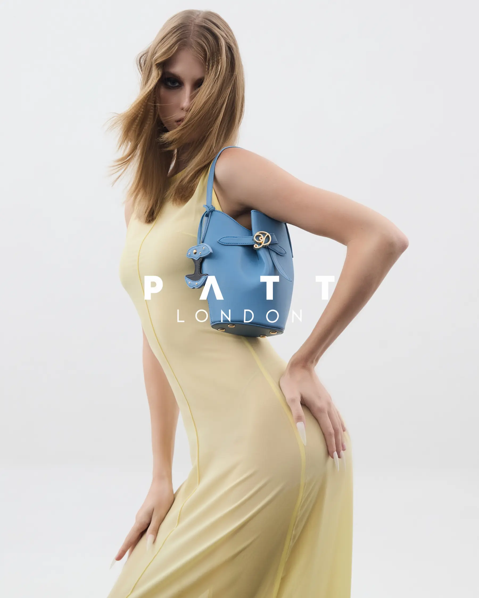

Portraitsภาพพอร์ตเทรต


Model / Creative Directorนางแบบ / ครีเอทีฟไดเรกเตอร์
Refined by experience. Defined by instinct.ขัดเกลาด้วยประสบการณ์ นิยามด้วยสัญชาตญาณ
Vasilinaวาซิลินา
Presence is not a pose.
It is a point of view.ตัวตนไม่ใช่เพียงท่วงท่า
แต่คือมุมมองที่อยู่เบื้องหลัง
I’m a Bangkok-based model and creative director working across fashion, editorial, and image-led collaborations.
ฉันเป็นนางแบบและครีเอทีฟไดเรกเตอร์ที่ประจำอยู่ในกรุงเทพฯ ทำงานด้านแฟชั่น งานบรรณาธิการ และการร่วมสร้างสรรค์ผ่านภาพ
Read my storyอ่านเรื่องราวของฉันSelected workผลงานคัดสรร


Selected clientsลูกค้าที่ร่วมงาน
Measurements & comp cardสัดส่วนและคอมพ์การ์ด
Portfolioพอร์ตโฟลิโอ





Motionภาพเคลื่อนไหว


Digitalsดิจิทัลส์


Availabilityตารางงาน
For bookings and collaborations, I’d love to hear what you have in mind.หากสนใจจองงานหรือร่วมงานกัน เล่าไอเดียของคุณให้ฉันฟังได้เลย
Check availabilityตรวจสอบคิวงาน